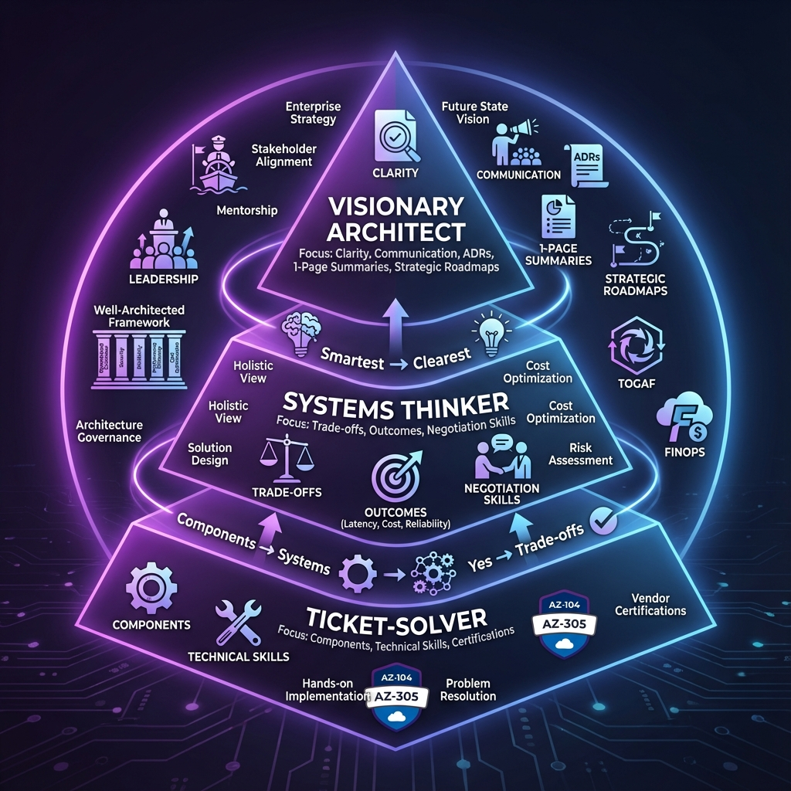

Reality Check
Certifications help, but the promotion bar is trust: can you manage trade-offs under pressure and communicate decisions clearly.
The 3 Shifts
1) Components → systems
Optimize outcomes: latency, blast radius, operations, total cost.
2) "Yes" → negotiated trade-offs
Translate "five nines" into incremental cost, complexity, and staged SLO roadmap.
3) "Smartest" → "clearest"
Use a repeatable package: 1-page summary, ADRs, diagrams, rollout plan.
Diagram (Azure icons)
References
Microsoft Learn
- AZ-305: Designing Microsoft Azure Infrastructure Solutions
- Cloud Adoption Framework
- Azure Well-Architected Framework
- Architecture Decision Records